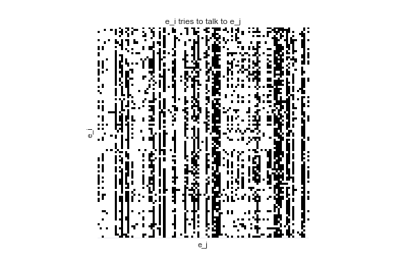
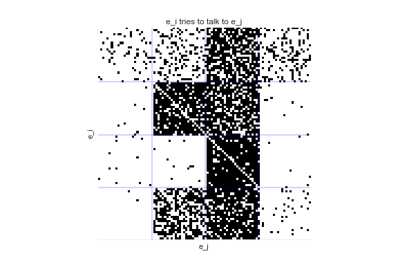
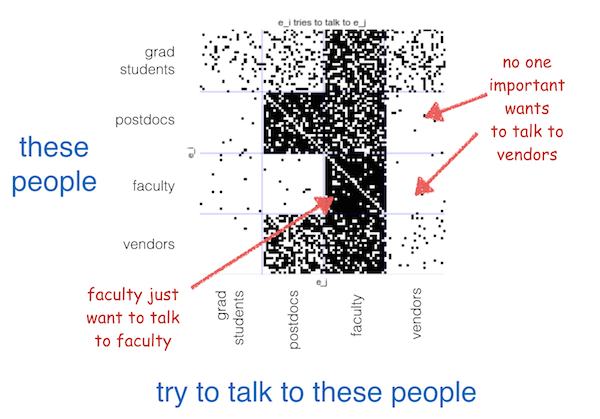
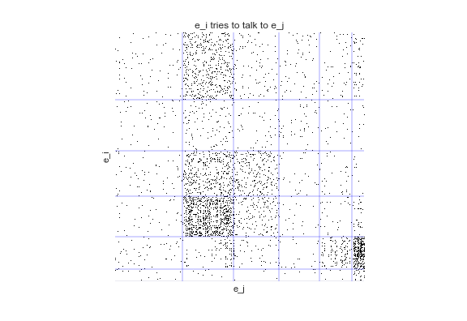
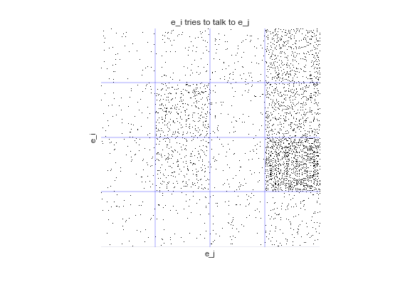

A stochastic block model is a statistical model for graphs that assumes connectivity only depends on the underlying type of the node. We are interested in making inferences about those node types based on the observed graph. For this paper we extended a nonparemetric type of block model to incorporate distance-dependence and additional feature metadata, and applied it to connectome reconstruction.
What follows is a simple, and hopefully intuitive explanation of what the model finds in data. For details, both neural and mathematical, see the paper
Imagine going to a conference and watching researchers attempt to talk to one another. We record when researcher \(e_i\) tries to talk to researcher \(e_j\). Note that "tries to talk to" is not symmetric -- I might try and talk to someone, but that doesn't mean they will talk to me (this happens all too often!). We end up with a directed graph of the data that looks like this

What can we learn from this graph? Are there certain patterns of interaction, or certain types of researchers?
When we fit a stochastic block model to this data, we are learning a hidden class or type, \(m_i\), for each node \(e_i\), with the prior belief that that type determines connectivity. When we sort the graph, a pattern emerges:

Our model has found four types of people at this conference. We can see postdocs, grad students, faculty, and vendors.

Let's assume that the conference is massive, like the annual Society For Neuroscience meeting at ~30,000 people. With a conference this large, it may be the case that most people never even get near-enough to each other to try and talk.
This time, we have some explicit distance-dependence in our data. That is, we know if \(e_i\) tried to talk to \(e_j\) and how far away \(e_i\) and \(e_j\) were. If we ignore this distance-dependence, we "overcluster":

But when we explicitly incorporate distance, we see we recover the four, true groups.

As datasets grow larger and more sparse, the importance of accomodating distance as well as other prior knowledge only grows. Read more in the paper!
You can try this example yourself via the jupyter notebook.